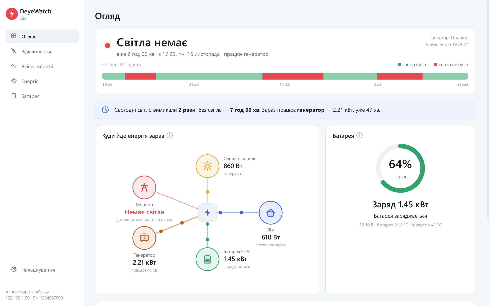
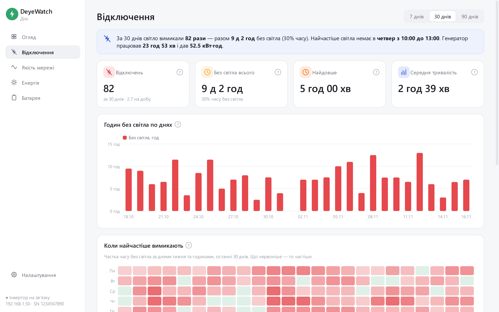
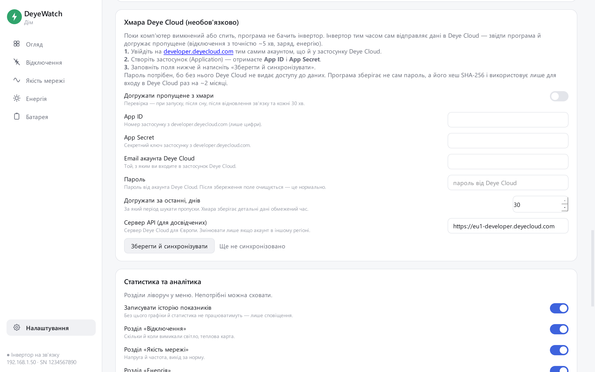
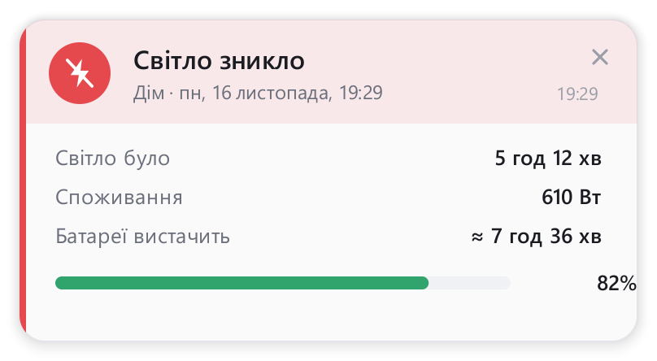
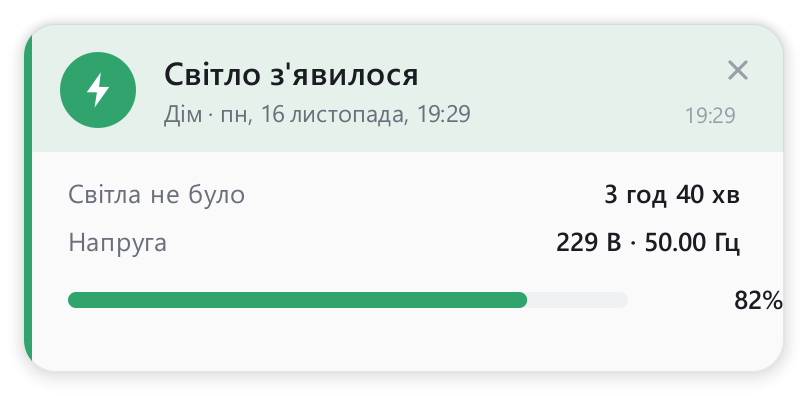
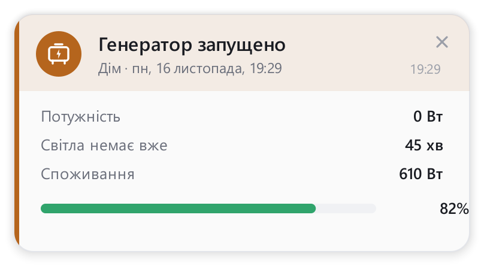
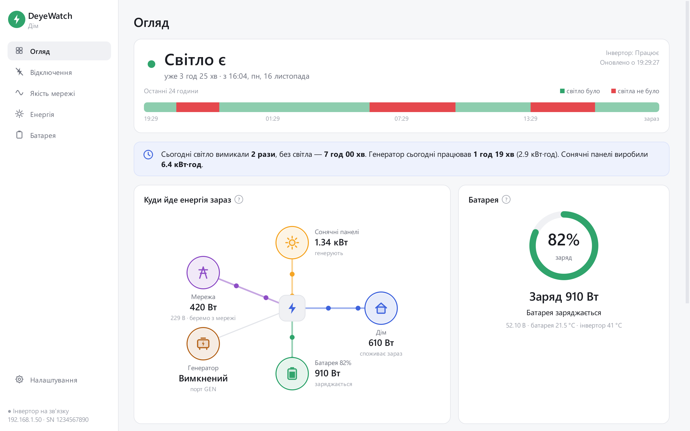

DeyeWatch стежить за гібридним інвертором Deye і за 10–20 секунд повідомляє, коли зникає чи з'являється світло. Показує, на скільки вистачить батареї, і веде повну статистику відключень, мережі та енергії.

Зрозуміло з першого погляду: великий стан, схема потоків, висновки людською мовою й підказка до кожного показника.
Світло зникло чи з'явилося, низький заряд, напруга поза нормою, генератор, втрата зв'язку — на робочому столі й у Telegram.
Звідки береться електрика — мережа, сонце, генератор, батарея — і куди йде. З потужністю й анімованим напрямком.
«Вистачить ≈ 7 год 40 хв» при поточному споживанні — до мінімального заряду, на якому інвертор вимикається.
Скільки разів і як довго, години по днях і теплова карта «коли найчастіше вимикають» — видно справжній графік.
Напруга й частота з межами норми, сонце, споживання, мережа й генератор по днях, рівень самозабезпечення.
Дані напряму з WiFi-стіка у вашій мережі. Ні власного сервера, ні телеметрії. Deye Cloud — лише за бажанням.
Сторінка відключень сама підсумовує головне: скільки разів і як довго не було світла, і в які дні та години це трапляється найчастіше.

Підключіть свій акаунт Deye Cloud — і DeyeWatch сам догрузить пропущене: при запуску, після сну, коли повернувся зв'язок і кожні 30 хвилин.

Власні картки в куті екрана з головним: що сталося, скільки тривало, скільки заряду й на скільки його вистачить. Те саме — у Telegram, вам і рідним.



Світла й темна теми підлаштовуються під систему. Дані на знімках — демонстраційні.

Оберіть свою систему. Програма сама знайде WiFi-стік інвертора у вашій мережі.
Windows 10 / 11, 64-біт. Один файл — без встановлення, Python не потрібен.
Якщо SmartScreen попередить: «Докладніше» → «Виконати в будь-якому разі».
Завантажити .exeUbuntu 22.04+, Debian 11+, Linux Mint 21+ (x86_64). Встановлюється без інтернету:
sudo apt install ./deyewatch_amd64.deb
Fedora, Arch, openSUSE, ARM64 (Raspberry Pi 4/5). Потрібні Python 3.9+ і інтернет:
tar xzf DeyeWatch-linux.tar.gz → sh install.sh
Програма шукає WiFi-стік у мережі й підключається сама. Не знайшла — «Знайти автоматично» або IP і SN стіка вручну.
Ємність батареї й мінімальний заряд, автозапуск — за підказками на головному екрані.
Сповіщення на телефон рідним і догрузка історії з Deye Cloud — покрокові інструкції прямо в налаштуваннях.
Детально — у посібнику зі встановлення. Усі версії — на сторінці релізів.
Жодного додаткового обладнання — лише WiFi-стік, який уже стоїть в інверторі.
Однофазні гібридні Deye серій SUN-…-SG0xLP1 (перевірено на SUN-6K-SG03LP1). Sunsynk і Sol-Ark з тією ж картою регістрів, імовірно, теж працюють.
Стік, що відповідає в локальній мережі на порту 8899 (протокол Solarman V5). Комп'ютер має бути в тій самій мережі.
Підключений до порту GEN інвертора — з'явиться на схемі, у статистиці й сповіщеннях автоматично.
Так. DeyeWatch безкоштовний і з відкритим кодом (ліцензія MIT). Без реєстрації, реклами й підписок.
Ні. Дані беруться напряму з WiFi-стіка у вашій домашній мережі. Інтернет потрібен лише для Telegram і Deye Cloud, якщо ви їх увімкнете. Telegram-повідомлення, надіслані без інтернету, стоять у черзі й приходять пізніше з правильним часом.
Роутер, модем провайдера й комп'ютер мають живитися від резервного виходу інвертора або ДБЖ — інакше разом зі світлом зникає мережа. Також перевірте, що програма запущена (іконка біля годинника) і ввімкнено автозапуск.
Поки комп'ютер вимкнений, сповіщень не буде, але історію можна не втрачати: підключіть Deye Cloud, і програма догрузить пропущене. Для цілодобових сповіщень у Telegram є легкий бот для роутера.
У програми немає власного сервера й телеметрії. Історія зберігається лише на вашому комп'ютері. Пароль Deye Cloud не зберігається — тільки його хеш SHA-256, як вимагає API Deye. Код відкритий — його можна перевірити.
Файл не має платного цифрового підпису. Натисніть «Докладніше» → «Виконати в будь-якому разі». Або зберіть програму самостійно з сирців.
Спробуйте: якщо стік відповідає на порту 8899, а карта регістрів збігається з Deye hybrid, програма запрацює. Розкажіть про результат в issue — це допоможе іншим.
Покрокові інструкції, довідник налаштувань і відповіді на питання.